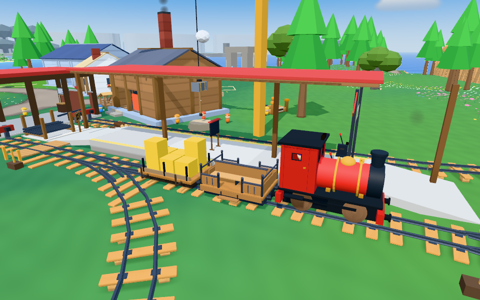
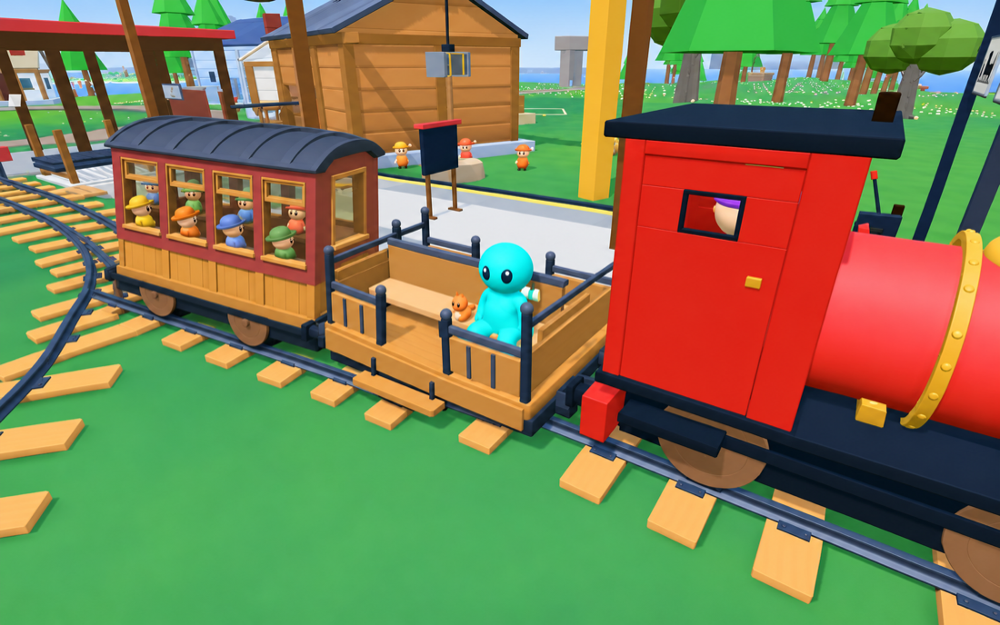
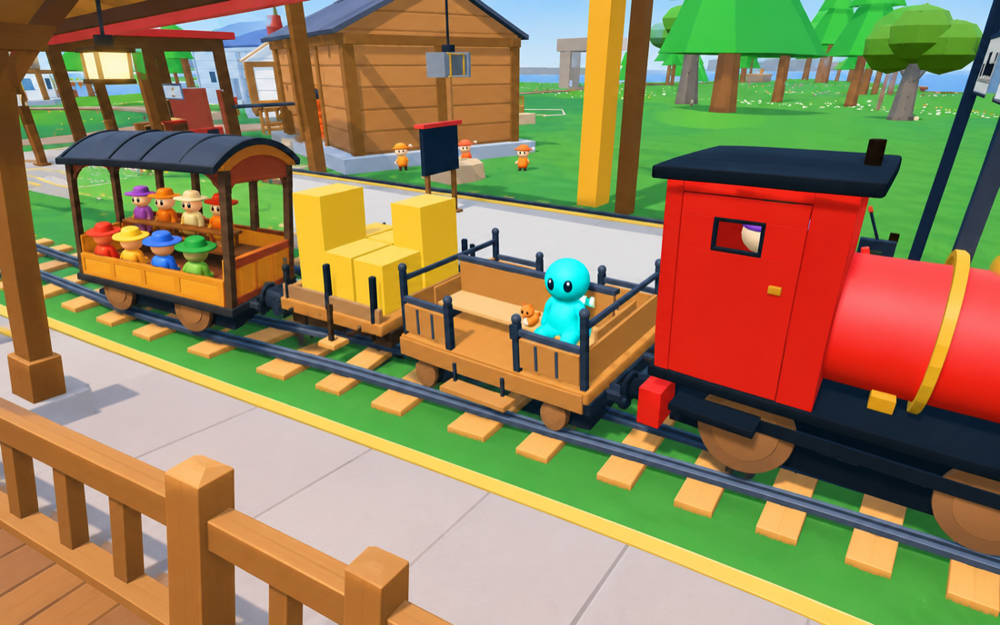
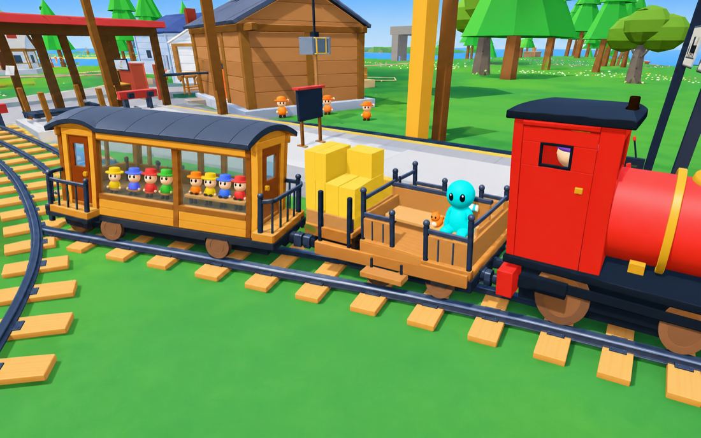

BOOGLE / LOOK STUDY / 16 NOVEMBER 2026 / PREVIZ ONLY
A proper little passenger coach
Eight riders, in a dedicated car included with every passenger train. The players’ knifeboard stays as it is. No
purchase, new strings or game changes. Proposal for a look decision; no candidate is owner-approved.
The period already in the game
Reading: a late-Victorian British narrow-gauge industrial/light railway, roughly 1870–1900. This is a
visual inference, not a canonical date or a proposal to reintroduce progression eras. The squat short-wheelbase
steam engine, separate cab, tall chimney, red boiler and brass bands suggest small industrial steam; timber
flatbeds, exposed iron rails and simple plank platforms reinforce that reading. The Roundhouse’s radial stalls and
turntable belong to the same steam workshop vocabulary, but do not date the game on their own. The
inspected running-game Roundhouse still shows the radial stone stalls,
timber turntable and fan tracks.
Source inspection: engine geometry and its
recipe; existing cars;
station palette;
Roundhouse. The
Roundhouse research concerns workshop/progression, not an
authoritative historical date; boiler/cart art supports broad bevels
and simple material blocks.
Use honey timber #b98a52, brown posts #5c4530, dark iron #2f3131, restrained red #a33a2c and small brass accents
#e6a33e. These are game colors, not a claim about a historical railway’s livery. Keep broad panels and readable
joints; omit lettering, fine lining, rivet fields and ornamental lamps.
Named references — descriptions, no copied photographs
Arc roofs keep the silhouettes low. A clerestory and lamp pots would add height and clutter without explaining
eight passengers; full-length running boards are replaced by one clear step at each entrance. Panelled timber
below, open air or large droplights above, and dark underframes carry the period.
Anchor — today’s train

Fresh running-game capture at fd9cd961, seeded trains-on, 16 November: red steam engine, existing empty
knifeboard, cargo car and timber station. WebGPU; no graphics errors. Look images below are generated proposals,
never running-game evidence.
Scale contract and honest lengths
Today’s player car: 2.20 m wide × 3.20 m long, deck 0.70 m. Player: 1.70 m. Little guy: about 0.95 m
standing, hat 0.584 m across. The earlier
rider-car layout studies
are superseded; their measured sizes still bind (source available at commit 0f5720adf).
All three seat 4 + 4 on facing longitudinal benches, 0.60 m pitch. Four hats occupy 3 × 0.60 + 0.584 =
2.384 m. Proposed bench top is 0.22 m above deck, depth 0.35 m; the 1.80 m body leaves about 0.80 m between
benches after walls/posts. These are furniture assumptions needing a seated folk pose, not measurements of an
existing seated rig. A player’s furniture remains much taller.
Platform gap to resolve: the current platform edge is 1.65 m from track centre and 0.72 m high; a 1.80 m
coach body leaves a 0.75 m horizontal gap to its side at the 0.70 m deck. Each candidate therefore needs an
engineered boarding step/bridge or a wider underdeck ledge; the body width is not a proven boarding solution. Do
not shrink the platform or silently change its collider.
Lengths below are over body/deck, including balconies, excluding couplers. Reserve provisionally 0.25 m coupling
allowance at each end; the fit-check owner must measure actual train spacing, curves, frame and platforms. A 2.40
m body leaves only 0.016 m beyond the four hats: insufficient for end structure or motion. No candidate quietly
squeezes into it.
| Candidate |
L × W × H over rail |
Minimum body length |
At 2.4 / 3.2 m |
| A · Panelled bug box |
2.80 × 1.80 × 2.05 m |
2.60 m |
No / yes geometrically |
| B · Summer coach |
2.60 × 1.80 × 2.05 m |
2.50 m |
No / yes geometrically |
| C · Balcony saloon |
3.20 × 1.80 × 2.10 m |
3.20 m |
No / exactly, before couplers |
Minimum A: 2.384 m hat run + 0.20 m ends ≈ 2.60 m. B: + 0.10 m thin open end frames ≈ 2.50 m. C: 2.40 m clear
saloon + two 0.40 m balconies = 3.20 m (end frames integrated into balcony zones). These are static packing
floors; animation may demand more.
A · Panelled bug box
Strongest enclosed period silhouette; weakest fare readability. Nominal 2.80 × 1.80 × 2.05 m.
Orthographic design envelopes: four near-side riders; far four overlap in side elevation. End shows two rows. Hats
are 0.584 m wide; bodies/poses are schematic. Roof arcs and projections stay inside stated height. Drawing defines
dimensions; painted images do not.

Visibility: Four open droplights per side, low sills and no dark glass: hats and faces show broadside, but
the far bench still disappears behind the near row.
Build: Panelled lower shell, four-wheel iron chassis, arc roof, window posts, two benches, side doors and
short running steps. Shared needs: eight seated folk poses and anchors, boarding motion, coupler mesh and
train-placement integration.
Boarding: Two side doors at bench ends, opening toward the platform; split the access between both ends
rather than crossing seated knees. Door sweep and the last seat need a build check.
Empty / full: Empty: light through the windows and exposed bench slats. Full: four hats per side, with the
far four partially occluded; no counter may substitute for them.
B · Summer coach
Best balance of a real passenger coach and visible fares. Nominal 2.60 × 1.80 × 2.05 m.
Orthographic design envelopes: four near-side riders; far four overlap in side elevation. End shows two rows. Hats
are 0.584 m wide; bodies/poses are schematic. Roof arcs and projections stay inside stated height. Drawing defines
dimensions; painted images do not.

Visibility: Open sides and low waist rails expose hats, bodies and empty seats. A low camera can still
align the two rows; stagger the camera test, not the measured seating.
Build: Four-wheel underframe, panelled ends, eight canopy posts, one shallow arc canopy, two slatted
benches, low iron rails and side gates. Shared needs: eight seated folk poses and anchors, boarding motion,
coupler mesh and train-placement integration.
Boarding: A 0.60 m side gate at either end of each bench run; a short step at platform edge, no end-to-end
transfer from the player car. The roof is for folk, not player walk-through.
Empty / full: Empty: two visibly small benches beneath a real coach roof. Full: two orderly rows of four;
large openings make occupancy clearest, though the roof can hide hats from high cameras.
C · Balcony saloon
Most railway character, with the largest length and boarding cost. Nominal 3.20 × 1.80 × 2.10 m.
Orthographic design envelopes: four near-side riders; far four overlap in side elevation. End shows two rows. Hats
are 0.584 m wide; bodies/poses are schematic. Roof arcs and projections stay inside stated height. Drawing defines
dimensions; painted images do not.

Visibility: Large clear windows expose near-side faces; the end door offers an extra glimpse. The solid
body and roof hide more of the far row than B.
Build: Central panelled shell, low arc roof, four-wheel chassis, broad windows, two benches, two end doors,
balcony decks, iron guard rails, side steps and gates. Shared needs: eight seated folk poses and anchors, boarding
motion, coupler mesh and train-placement integration.
Boarding: Board from platform to balcony, then turn through an end door into a 0.80 m aisle. A 0.40 m
balcony is a minimum static landing for tiny folk, not a validated turning envelope.
Empty / full: Empty: a distinct central room with vacant benches and balconies. Full: a lively little
saloon, but only the near four read reliably through the side; end balcony occupants are not extra seats.
Image inspection — intent versus measurements
All three look images were made with the built-in OpenAI image_gen tool, using the earlier running-game anchor
from 0f5720adf as identity/style reference. A omits the cargo car, and its roof ribs and glazing are more
elaborate than needed. B best preserves the consist and exposes eight riders, but its gate/step is unresolved. C
incorrectly puts all eight riders along the visible side and exaggerates body length; use the 4 + 4 elevations and
dimensions, not that painted seating arrangement. In every image, hat sizes, body lengths and existing car
geometry are approximate: none is a scale or fit proof. Engine noses are cropped, but the cab, boiler and coupling
order remain legible.
Recommendation: B, the summer coach
Build the roofed open coach as the first look target: its arc canopy, panelled ends and four-wheel chassis say
“passenger railway,” while eight small seats and exposed riders explain fares without labels. Use the 2.60 m
nominal body, not its 2.50 m packing floor; retain the players’ car and engine sizes. A is the fallback if an
enclosed coach matters more than occupancy; C earns its extra length only if balcony boarding proves charming and
readable.
Not judged by this previz
Actual seated folk rig and hat collisions; view from both travel directions and game zoom; empty-versus-full
recognition in motion; canopy occlusion; platform gaps, door and gate clearance; complete train length, curves,
swept corners and the rock frame; coupling, rider boarding and disembarking; performance, multiplayer behavior and
fun. The separate fit check owns physical feasibility. No claim of an in-game build, approval, playable boarding
or motion proof.
Tool receipts, image departures and capture identity: evidence notes. No ROM
data, copied reference photographs or runtime art assets. The Boogler’s copy is unchanged.